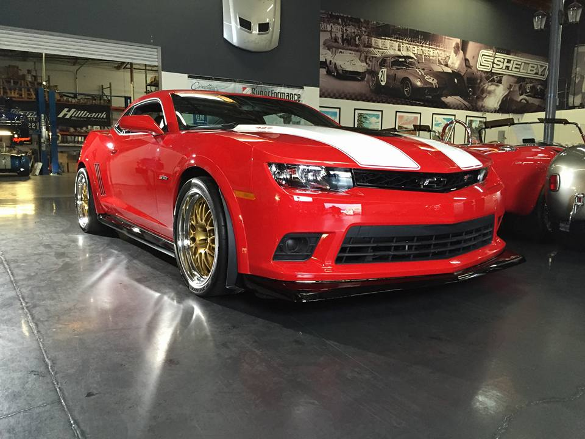

Анализирование характеристик последних моделей | ||||||||||||||||||||||||||||||||
Марка машины |
Ford Mustang | Chevrolet Camaro | Dodge Challenger |
Компоновка |
Двигатель спереди, задний привод | Двигатель спереди, задний привод | Двигатель спереди, задний привод |
Тип ДВС |
Бензиновый, V8, чугунный блок, алюминиевая головка, OHC, 2 клапана на цилиндр | Бензиновый, V8, алюминиевый блок и головка, OHC, 2 клапана на цилиндр | Бензиновый, V8, чугунный блок, алюминиевая головка, DOHC, 4 клапана на цилиндр |
Рабочий объём, куб. см |
6410 | 6162 | 4951 |
Мощность двигателя, л.с./об.мин |
485/6000 | 426/5900 | 435/6500 |
Базовая стоимость автомобиля (в США), $ |
39 490 | 38 000 | 35 420 |
Стоимость тестируемого автомобиля, $ |
39 890 | 41 880 | 46 380 |
Конечный рейтинг 3 место - Dodge Challenger 2 место - Ford Mustang 1 место - Chevrolet camaro После сравнения технических и стоимостных характеристик, я решил поискать информацию о популярности данных автомобилей в интернете.
На основе всей имеющейся информации был составлен рейтинг по местам.
Данный рейтинг онснован на сравнение характеристик. После сравнения высняилось что Chevrolet Camaro является универсальным автомобилем, сочетающим в себе не только большую мощность но и приемлемую цену.
Краш-тест этих машин можно увидеть перейдя по ссылке: краш-тест